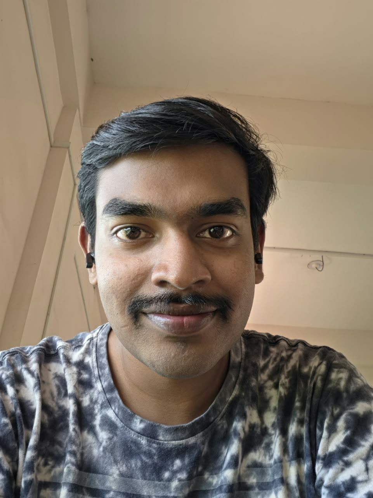

2026 — PRESENT
CURRENT STUDIESRouen, France
Master's in Electronic and Embedded Systems
ESIGELEC · School of Engineering
Postgraduate studies focused on advancing knowledge in electronic and embedded systems.
Hello, I'm
An Electronics and Communication Engineering graduate exploring the intersection of intelligent systems, embedded technology and applied research.

I’m an engineering graduate with a strong interest in how technology can solve meaningful, real-world problems.
My academic foundation spans communication systems, RF engineering, embedded systems and signal processing. Alongside core engineering, I have developed practical experience in Python-based data analysis and machine learning through an academic research project focused on Alzheimer's disease detection.
Now continuing my learning in France, I’m building a broader perspective on electronic and embedded systems while strengthening my technical and cross-cultural capabilities.
Postgraduate studies focused on advancing knowledge in electronic and embedded systems.
CGPA: 6.07 / 10.0
Class XII: 77% · Class X: 91%
Core engineering foundations and circuit-level thinking.
Hardware-oriented problem solving and system interfacing.
Building computational workflows and exploring data-driven solutions.
Simulation, analysis and technical productivity tools.
Designed and developed a machine learning-based predictive system to analyse medical datasets and identify patterns associated with cognitive decline, supporting research into early detection.
The project covered the complete workflow: data preprocessing, exploratory data analysis, feature engineering, model development, evaluation and visualization.
Technical credentials and training in:
Have a project, research idea or opportunity in mind? I'd be glad to connect.
aldrinjohn581@gmail.com ↗